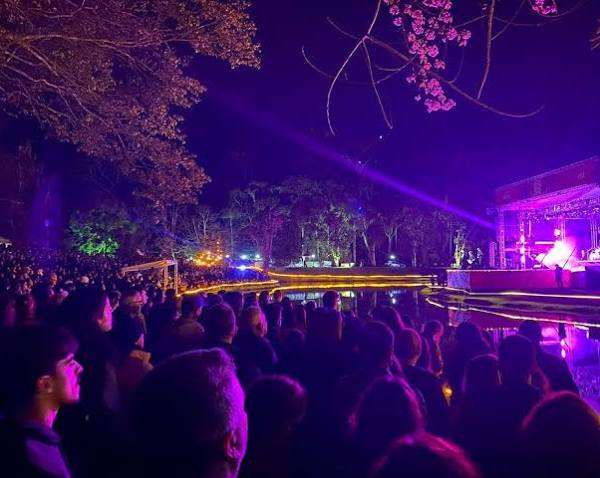
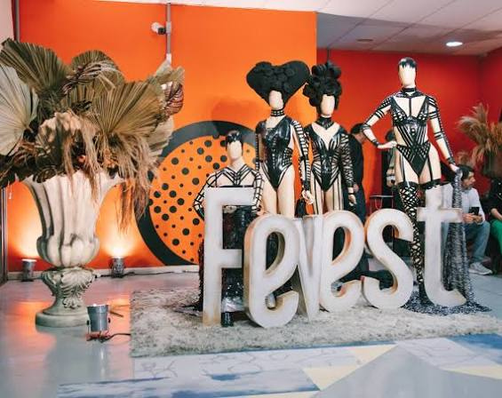
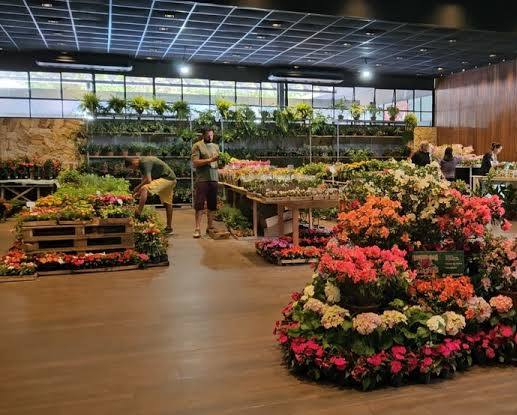
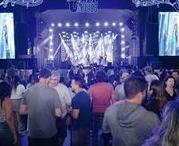

Os eventos em Nova Friburgo são marcados pela forte presença de festivais culturais, atrações de inverno, feiras gastronômicas e intensa movimentação artística na serra.
Festival de Inverno:
Fevest (Feira de Moda Íntima):
Festa do Morango com Chocolate:
Fri Jazz & Blues

O maior evento cultural multilinguagem do país ganha um charme único em Nova Friburgo, ocorrendo geralmente entre julho e agosto. Os grandes shows nacionais de rock, MPB e samba são o grande chamariz e acontecem no icônico palco montado no lago/ilha do Nova Friburgo Country Clube. O Sesc também promove programações simultâneas de literatura, cinema e artes visuais em sua unidade local, com ingressos a preços acessíveis ou mediante doação de alimentos.

O coração econômico de Nova Friburgo pulsa forte na Fevest, realizada no meio do ano (geralmente em junho ou julho). O evento reúne centenas de expositores do setor têxtil, fitness, de praia e de matéria-prima no Nova Friburgo Country Clube. Além de ser o principal polo gerador de negócios da América Latina para o setor, a feira também conta com desfiles conceituais de moda e palestras sobre inovação.

Acontece tradicionalmente em outubro e celebra o fato de Nova Friburgo ser o maior produtor de morangos do estado do Rio de Janeiro. Sediado também no Nova Friburgo Country Clube, o evento é um verdadeiro paraíso gastronômico repleto de stands com fondues, espetos de frutas, tortas e doces artesanais. A feira é integrada com a Festa da Flor, trazendo uma belíssima exposição da produção de flores local e shows culturais.
